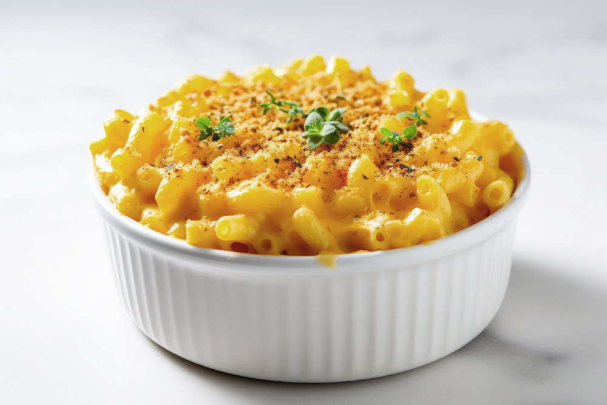

Home

Ultimate Macaroni and Cheese
Macaroni and Cheese is the ultimate American comfort food. Known the world over, and for good reason. Rich and creamy cheese sauce, with golden crumb topping. It's enough to make even the dryest of mouths water.
This recipe will be easy to follow along with and will having you digging into a little piece of Heaven in no time.
Ingredients
- 1 package of Macaroni pasta
- 6 tablespoons of butter
- 6 tablespoons of all-purpose flour
- 2 tablespoons of ground mustard
- 1 1/2 teaspoons of course ground pepper
- 1 teaspoon of garlic powder
- 1 teaspoon of salt
- 4 cups milk
- 6 cups shreeded cheddar cheese
- 1 1/2 cups panko bread crumbs
- 1 teaspoon of paprika
Directions
- Preheat the oven to 400 degrees F (204 degrees C). Grease a 9x13-inch baking dish.
- Bring a large pot of lightly salted water to a boil. Cook macaroni pasta in the boiling water, stirring occasionally, until tender yet firm to the bite for about 8 minutes. When ready, drain well.
- Melt butter in the same pot on medium heat; sprinkle with flour, ground mustard, black pepper, garlic powder, and salt. Cook and stir until well blended, about 2 minutes. Gradually stir in milk; cook, stirring constantly, until sauce begins to thicken for about 3 minutes.
- Stir in cheese until melted and smooth. Off heat, gently stir in macaroni until coated. Transfer to the prepared baking dish. Combine panko and paprika; evenly sprinkle over top.
- Bake in the preheated oven until bubbly and golden brown on top, 25 to 30 minutes. Let stand 5 minutes before serving.